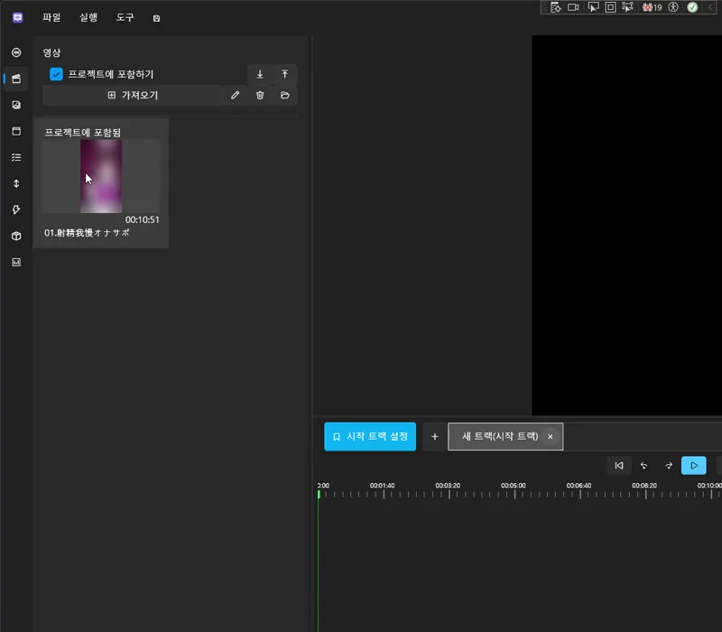

기본적인 스크립트 연동하기¶
이 튜토리얼에서는 기본적인 funscript, 영상, 음성을 프로젝트에 연동하는 과정을 배웁니다.
프로젝트 생성부터 트랙 배치까지, 가장 기본적인 제작 흐름을 익힐 수 있습니다.
🎯 목표¶
- 프로젝트 생성
- 트랙 생성
- funscript · 영상 준비
- 영상 불러오기
- funscript 불러오기
- 트랙에 배치하여 실행 준비 완료
1️⃣ 프로젝트 생성¶
프로젝트 생성 방법은 다음 문서를 참고하세요:
Create New Project
2️⃣ 트랙 생성¶

시작 트랙 생성 버튼 옆의 + 버튼을 눌러 새 트랙을 생성합니다.
트랙을 생성한 뒤, 생성된 트랙을 선택하고
오른쪽의 시작 트랙 설정 버튼을 누르면 해당 트랙을 시작 트랙으로 지정할 수 있습니다.

3️⃣ funscript 및 영상 준비¶

프로젝트에서 사용할 영상 파일과 funscript 파일을 미리 준비합니다.
4️⃣ 영상 불러오기¶

왼쪽 사이드바에서 영상(Video) 탭을 선택한 뒤, 사용할 영상을 불러옵니다.
5️⃣ funscript 불러오기¶

왼쪽 사이드바에서 흔듦 액션(Stroke) 탭을 선택하고 funscript 파일을 불러옵니다.
6️⃣ 트랙에 배치하기¶

불러온 영상 파일과 funscript 파일을 트랙 위로 드래그하여 배치합니다.
왼쪽 목록에서 원하는 항목을 끌어다 트랙의 특정 위치에 놓으면 추가됩니다.
💡 주의
배치 과정에서 영상이나 funscript가 00:00:00 위치에 정확히 놓이지 않을 수 있습니다.
시작 시간을 꼭 확인하세요.

7️⃣ 재생 및 확인¶

상단의 재생 버튼 ▶️을 눌러 프로젝트가 정상적으로 재생되는지 확인하세요.
아직 기기가 연결되지 않은 경우에는
왼쪽의 실행 정보 탭을 통해 funscript가 제대로 작동하고 있는지 확인할 수 있습니다.

예제에서 사용된 영상은 저작권 보호를 위해 공개하지 않습니다.
사용자는 자신이 보유한 합법적인 영상(funscript와 함께 사용 가능한 영상)을 사용하세요.
📌 다음 단계¶
다음 문서에서는 텍스트와 사운드를 콘텐츠에 추가하는 방법을 배웁니다.
음성을 영상처럼 만들고 자막 달기